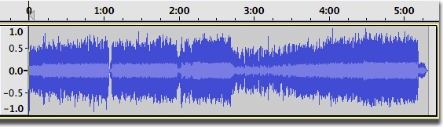
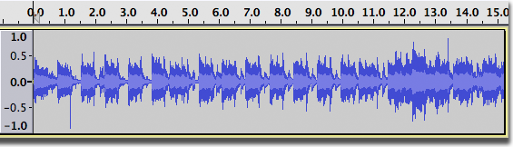
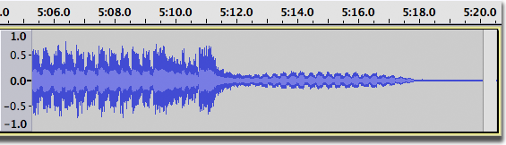
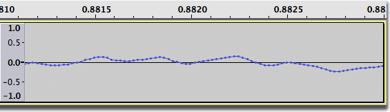
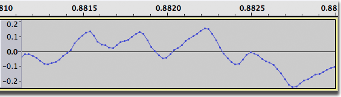
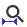
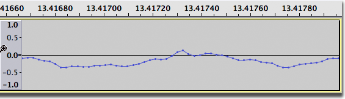
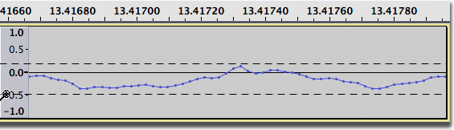
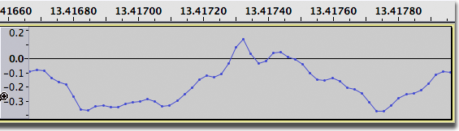

Zooming Overview
- 
The figure above shows Audacity's view of an entire song, zoomed all the way out. It's really useful to get an idea of the whole piece from start to finish, but it's hard to see much detail - like a forest with no individual trees.
Zooming the time scale, or zooming "horizontally", is something you'll do all the time. It lets you focus on the first 15 seconds, for example:
- 
or the last 15 seconds:
- 
or even a tiny fraction of a second, where you can see the individual audio samples as small dots:
- 
Occasionally you may want to zoom "vertically", so that you see only a portion of the waveform from top to bottom, but in greater detail:
- 
Time Scale Zooming (Horizontally)
There are five ways to zoom horizontally:
Menu Commands
submenu: use the four commands in this submenu to;
- : double the current zoom level.
- : reverts back to Audacity's default zoom, where you can see 5 - 10 seconds at a time.
- : cuts the current zoom level in half
- : zooms and scroll so that the selection just fits in the window.
submenu: use the first two commands in this submenu to;
- : zoom out just enough so that you can see the entire project
- : resize all the tracks so they fit in the window vertically without scrolling. If you have more than about ten tracks, some scrolling up and down will still be needed, because there is a minimum track height beyond which reduction is impossible.
Edit Toolbar
Four of the view commands have equivalent buttons on the right of the Edit Toolbar:
- Zoom In
-
 Zoom Out
Zoom Out -
 Zoom to Selection
Zoom to Selection -  Fit Project in Window
Keyboard shortcuts
All six zoom commands have keyboard shortcut equivalents:
| Zoom action | Keyboard shortcut |
|---|---|
| Zoom In | Ctrl + 1 |
| Zoom Normal | Ctrl + 2 |
| Zoom Out | Ctrl + 3 |
| Fit to Width | Ctrl + F |
| Fit To Height | Ctrl + Shift + F |
| Zoom to Selection | Ctrl + E |
Mac users: Use ⌘ instead of Ctrl.
Zoom Tool
You can also zoom in and out using the Zoom Tool.
Zoom In or Out on the Mouse Pointer using the Scroll Wheel
If your mouse has a scroll wheel or ball, you can zoom in or out centered on the position of the mouse pointer, instead of centered on the selection or editing cursor.
When extremely zoomed out, or when zooming in or out near the beginning or end of the track, it may not be possible to keep the audio centered on the mouse pointer position.
Hold down the Ctrl key on your keyboard then scroll up to zoom in, or scroll down to zoom out. For example. you can zoom in at or near the start or end of a selection by placing the pointer there.
To zoom the waveform in Audacity without using the Ctrl key, look in these places, depending on which version of macOS/Mac OS X you are using:
- in the System "Mouse" Preferences (in older versions of Mac OS X before the Magic Mouse), disable "Zoom using scroll ball while holding Command" (or similar).
- in the System "Universal Access" Preferences, the "Seeing" tab, then in the "Zoom" section click the "Options" button - uncheck "Use scroll wheel with modifier keys to zoom"
- in the System "Accessibility" Preferences, click on "Zoom" in the left panel, then uncheck "Use scroll gesture with modifier keys to zoom".
Note: When Scrubbing or Seeking, the zoom buttons in Edit Toolbar and the zoom items in View Menu (or their shortcuts) also zoom at the mouse pointer and not at the selection or editing cursor.
Vertical zooming
Vertical zooming can be useful on occasions. You can zoom vertically whichever of the tools in Tools Toolbar are selected. Hover the mouse over the vertical scale of a track, and the pointer changes to a magnifying glass, indicating you can zoom vertically:
- 
- Left-click once to zoom in at the position on the vertical scale you are interested in. This point will then be centered on the vertical scale.
- Hold Shift then left-click (or just right-click) to zoom out incrementally.
- Hold Shift then right-click to zoom out immediately to normal zoom level.
- Ctrl + Shift with left-click can also be used to zoom out to normal on Mac.
Alternatively, click once and hold down the mouse button, then drag to select a vertical region:
- 
When you release the mouse button, exactly the range you selected will be zoomed in so as to fit vertically inside the track height:
- 
If you commence a drag to zoom in by mistake, you can press Esc before releasing the mouse to cancel the zoom operation.
In default Waveform view set in the Track Dropdown Menu you can zoom in to a minimum display range of 0.001 linear extending from top to bottom of the scale.